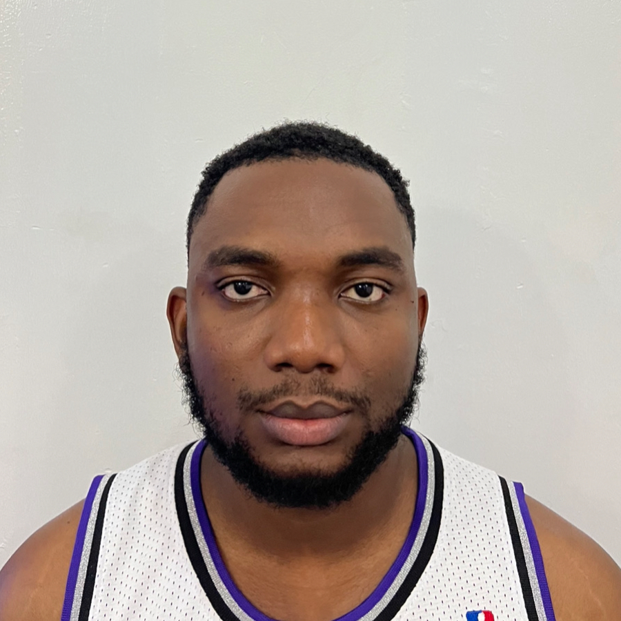

Duru-Alexis William Chukwudum

Summary
An analytical, creative, enthusiastic, and action-oriented graduate of Computer
Science from Imo State University, Nigeria. Possesses 7+ years of experience
across multiple technical and interpersonal functions, and has consequently built
a diverse portfolio of skills applicable to your organization. Able to effectively
adapt to change and operate on tight schedules, while working independently or
in a team setting. Seeking to leverage my competencies in understanding client
needs, designing effective solutions, breaking productivity records, and achieving
organizational goals.
Education
BSc Computer Science, Imo State University , Imo State. 2015-2019
Work experience
IT security Operations Engineer (Intern) April 2022 - Current
Reliance Infosystems Limited, Lagos Nigeria.
- Manage the risk of cyber security for networks, resources,
information capacities through full visibility of your digital and
physical assets, interconnections, defined roles and responsibilities
and policies and procedures for managing those risks.
- Continuously monitor solutions that detect anomalous activity and
other threats to operational continuity. Got to implement continuous
surveillance and threat tracking.
- Collect and analyze information about threat cases, conduct all
the activities necessary to eliminate the incident and integrate
lessons learned into revised response strategies.
Network / Cloud Engineer June 2020 –
December 2021 Austason Multi Company
Nig. Limited
- Designing and maintaining network and cloud systems.
- Ensuring secure and efficient data transfer.
- Optimizing cloud resources
IT Support Engineer Intern. May - November 2018
IT Support Engineer Entry Level. Jan 2019 – Feb 2020
Dewsat Services Limited, Imo State Nigeria.
- Cooperated diligently with other IT team members to plan, design, and
solve problems.
- Provided cabling solutions by crimping network cables.
- Performed installations of CCTV camera and Intercom Services.
- Interfaced with business analysts, developers and Technical Support to
determine optimal specifications.
- Installation of collaborative and learning enhancement systems,
ranging from interactive boards, audio conferencing systems and
projectors.
- Provided installed reports of CCTV and Intercom installations.
Skills
- Programming Languages: Python, SQL
- Operating System: Windows and Linux.
- Penetration testing
- Computer Repairs and Maintenance
Achievements
- Press. Co-editor of the University Blog 2019.
- Mentoring students on Public Speaking
Others
My Hobbies
Contact Me